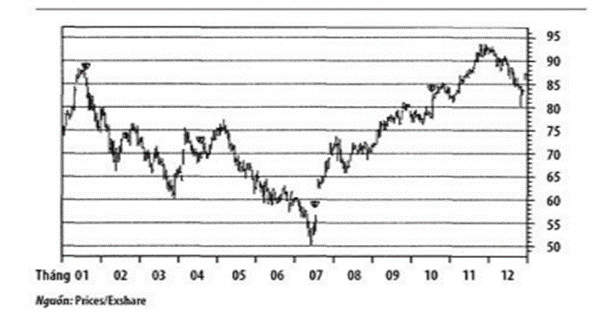
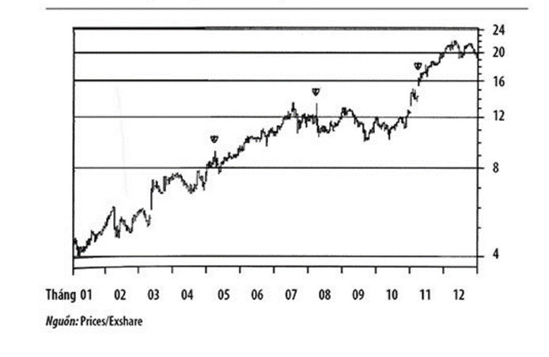

MỤC LỤC
CHƯƠNG BỐN
4.1.
Bất ngờ
Cái không được dự tính nhưng biết đâu lại rất có lời
BIẾN SỐ THEN CHỐT THỨ HAI của chúng tôi là những bất ngờ về doanh lợi (earnings surprises ). Những cổ phiếu với những bất ngờ tích cực về doanh lợi là những siêu sao trong thế giới của các cổ phiếu tăng trưởng. Hệt như Tom Brady, cầu thủ chỉ nổi lên từ vòng sáu của NFL draft[1]và lại thắng tiếp không chỉ ba trận chung kết Super Bowls mà còn là MVP (Most Valuable Player - cầu thủ xuất sắc nhất) của hai trận. Hay Tony Romo nhảy thẳng từ khán đài ra như một kẻ đóng thế để rồi đưa đội Dallas Cowboys trở lại với trận đấu quyết định vào năm 2006, có những cổ phiếu vượt quá những kỳ vọng của các nhà phân tích Wall Street chuyên theo dõi chúng, những cổ phiếu đó tăng giá một cách chóng mặt. Những cổ phiếu liên tục vượt lên trong một vài kỳ báo cáo doanh lợi theo nhiều quý liên tiếp thường tiếp tục đi tiếp để trở thành những siêu sao cổ phiếu tăng trưởng. Những cổ phiếu nào gây thất vọng và kiếm được ít kỳ vọng hơn thì tốt nhất là nên so sánh với Ryan Leaf ở Đội tuyển Bóng rổ Mỹ tại Olympic 2004, hay Bode Miller tại Olympic Mùa đông 2006. Sau khi không đáp ứng được với những kỳ vọng to lớn, họ biến mất và chẳng bao giờ xuất hiện nữa.
Cái làm cho những bất ngờ về doanh lợi có sức mạnh như thế là do các cổ phiếu tăng trưởng được định giá dựa trên những kỳ vọng của các nhà đầu tư về doanh lợi trong tương lai. Đánh giá của các nhà phân tích về những gì họ kỳ vọng công ty sẽ kiếm được qua mỗi quý - và cho vài năm trước mắt - sẽ được công bố bởi các nhà môi giới đầu tư, các hãng độc lập và các ngân hàng đầu tư. Các nhà phân tích thận trọng nghiên cứu công ty, cố gắng lượng giá trước những điều kiện kinh doanh và tình hình kinh tế sẽ tác động đến họ thế nào và xác định xem công ty sẽ làm ra bao nhiêu tiền. Mặc dù các nhà phân tích nghiên cứu tình hình một cách cẩn thận, dùng những mô hình và những công thức phức tạp để đưa ra các tiên đoán của mình, thế nhưng họ vẫn không thể biết chính xác chuyện gì đang diễn ra phía bên trong các bức tường của công ty. Khi một công ty thực hiện vượt mức, hay kém hơn so với các đánh giá, thì những mô hình cần phải được hiệu chỉnh tương ứng cho các quý và các năm tiếp theo. Điều này dẫn đến một sự thay đổi trong những kỳ vọng của nhà đầu tư, là cái mà những cổ phiếu tăng trưởng được đặt giá dựa trên đó, vì vậy giá cả sẽ tăng lên hay hạ xuống tương ứng.
Những nhà phân tích đánh giá bỏ qua dấu hiệu này vì một số lý do. Thứ nhất, dự đoán doanh lợi mỗi quý chính xác đến từng xu là một việc rất khó khăn. Ví dụ, làm sao người ta có thể biết trước nước uống tăng lực Monster của Hansen Natural lại vượt lên từ lĩnh vực nước uống đóng lon chứa caffein và vitamin - một thị trường vốn không còn béo bở - và kích động để đưa doanh lợi lên cao và nhanh hơn so với dự đoán. Hoặc iPod của Apple nổi lên từ lĩnh vực các thiết bị nghe-nhìn để tạo ra thế độc quyền thực sự cùng một nguồn lợi nhuận khổng lồ? Một lý do quan trọng khác khiến quá nhiều nhà phân tích cùng bỏ qua dấu hiệu này là do tâm lý bầy đàn của thế giới đầu tư. Nếu chúng ta tin rằng mục tiêu hàng đầu của nhiều nhà phân tích là không phải đưa ra những tiên đoán thành công để dẫn đến những vụ đầu tư có lợi nhuận, mà là làm sao để không bị sa thải , thì những đánh giá này sẽ nằm trong một thứ tương tự như một dải biến thiên và hầu hết có xu hướng ở phía thấp hơn. Khi bạn đã tốn bao nhiêu thời gian và tiền bạc để giành được mảnh bằng MBA của Ivy League, rồi kiếm được cho mình một công việc lương bổng hậu hĩnh ở Wall Street, dĩ nhiên bạn sẽ không muốn đánh mất công việc đó!
Kết cục thì có vẻ đã hình thành một môi trường mà trong đó phạm sai lầm vẫn cứ OK, nếu như những người khác cũng sai. Ví dụ, nếu bạn là nhà phân tích ở công ty môi giới ABC, theo dõi Acme Roadrunner and Explosive Corporation (AREC), thì sẽ là khôn ngoan nếu bạn gọi cho cô bạn học ở dưới phố làm việc tại hãng Dewey, Cheatem and Howe danh giá, để hỏi xem cô ta nghĩ thế nào về doanh lợi của quý này. Nếu cô ta nghĩ rằng AREC sẽ kiếm được 1 USD cho mỗi cổ phần trong quý này, thì sẽ là khôn ngoan để dự đoán gần với con số của cô ta. Nếu bạn lạc quan hơn một chút về thị trường cho món gà lôi chiên giòn và các thiết bị nổ cá nhân, có lẽ bạn sẽ đưa ra một đánh giá ở mức 1 USD và 1 xu; còn nếu bạn bi quan hơn một chút, có lẽ con số của bạn sẽ là 99 xu cho một cổ phần. Hầu hết các báo chí và website tài chính theo dõi các đánh giá doanh lợi đều nêu con số của các nhà phân tích theo dõi một cổ phiếu nào đó và con số cao, thấp, trung bình hay đồng thuận. Khá là ngạc nhiên khi thấy những con số này gần với nhau như thế nào. Tâm lý bầy đàn buộc các nhà phân tích phải bám theo nhau và theo sát những đánh giá của nhau.
Những bất ngờ tích cực về doanh lợi đã ngày càng trở nên quan trọng trong những năm gần đây. Trong đợt bùng phát Internet và công nghệ cuối thập niên 1990, các nhà phân tích đã bị tố cáo, và trong một số trường hợp thậm chí còn bị khởi tố bởi Ủy ban Chứng khoán và Giao dịch hoặc bởi Elliot Spitzer và đội quân kẻ cướp gồm các luật sư trợ lý quận của ông vì những đánh giá quá lạc quan và thổi phồng về doanh lợi của các công ty công nghệ. Thường thì ngoài những dự báo doanh lợi được công bố còn có thêm những con số trôi nổi quanh Wall Street và trên một số website về đầu tư, gọi là con số rỉ tai . Con số này thường cao hơn những đánh giá được công bố và thường được cho là thể hiện suy nghĩ thực của nhà phân tích. Chẳng những khiến cho công ty đó phải đánh bại con số của nhà phân tích, mà thực là ngạc nhiên, nó còn phải đánh bại cả con số rỉ tai nữa. Khi công ty đánh bại cả hai con số đó, giá cổ phiếu của nó thường tăng vọt. Những con số này thông thường đến được với các khách hàng lớn cùng những tổ chức đầu tư, và họ lợi dụng chúng tối đa.
Những con số rỉ tai đến hồi cáo chung với việc thông qua Đạo luật Sarbanes-Oxley cũng như những cáo buộc nổi tiếng chống lại các nhà phân tích lừng danh và đầy thế lực của Wall Street. Cụ thể, đạo luật Sarbanes-Oxley giải thích cặn kẽ về việc các nhà phân tích và các công ty phải tiết lộ thông tin cho công chúng như thế nào, các báo cáo cần phải được trình bày và phổ biến ra sao. Thời hậu Sarbanes-Oxley, nhà phân tích nào lan truyền con số rỉ tai cho những khách hàng ruột sẽ phải đối mặt với việc bị kiện, bị mất việc và bị phạt nặng. Luật Sarbanes Oxley cũng có hậu quả là khiến cho các công ty ngần ngại trong việc cung cấp thông tin cho các nhà phân tích. Vì vậy, việc dự đoán chính xác thậm chí còn trở nên khó khăn hơn. Một trong những kết quả của chuyện này là các nhà phân tích có xu hướng bảo thủ hơn trong các đánh giá doanh lợi của họ, và họ rất ngần ngại khi chẳng biết bấu víu vào đâu để nâng mức đánh giá lên trong lúc thông tin bị hạn chế.
Những bất ngờ về doanh lợi có xu hướng lặp đi lặp lại. Tức là, khi đã có một bất ngờ thì thường sẽ có những bất ngờ nữa theo sau, vì các nhà phân tích thường chậm nâng mức đánh giá lên để phản ánh thực tế mới. Những cổ phiếu gây bất ngờ trong một quý thì thường cũng sẽ gây bất ngờ trong quý tiếp theo. Đồ thị ở hình 4.1 về cổ phiếu của Apple trong năm 2006 cho thấy rõ hiệu ứng của những bất ngờ về doanh lợi qua nhiều quý.
Như ta có thể thấy ở đồ thị này, sau những bất ngờ về doanh lợi đầu tiên vào tháng Bảy năm 2006, một lần nữa Apple lại gây ngạc nhiên bằng sự gia tăng vào tháng Mười, khi doanh vụ iPod vẫn phát đạt và những máy vi tính mới được trình làng với những bài phê bình ích lợi.

Hình 4.1. Những bất ngờ về doanh lợi của Apple
Để thấy được hiệu ứng diễn ra đối với một thời kỳ gồm nhiều năm, hãy xem hình 4.2. Hansen Natural tăng hơn 400% sau một khoảng thời gian tương đối ngắn, vì từ quý này sang quý khác nó đều vượt quá những kỳ vọng của các nhà phân tích. Bắt đầu từ tháng Ba năm 2005, họ đã có những bất ngờ tích cực về doanh lợi trong ba quý liên tiếp, đẩy giá cổ phiếu của công ty lên ngày càng cao.

Hình 4.2. Những bất ngờ về doanh lợi của Hansen
Những bất ngờ về doanh lợi cũng có thể là thứ giúp chặn đứng đà suy giảm của một cổ phiếu, hay nâng một cổ phiếu đang vật vờ cả một thời gian dài đi lên. Suốt nửa đầu năm 2006, cổ phần của Ceradyne, nhà sản xuất vật liệu gốm cách nhiệt cho sản phẩm tiêu dùng và các thiết bị quốc phòng chịu nhiệt độ cực cao và chống ăn mòn, đã rơi từ gần 60 USD xuống chỉ còn khoảng 40 USD một cổ phần và trôi vật vạ chẳng biết về đâu. Bất ngờ về doanh lợi trong tháng 10 đã nâng giá cổ phiếu này trở lại trên mức 60 USD. Akami Technologies, một công ty dịch vụ Internet giúp tăng tốc độ và độ ổn định đường truyền của các điểm Internet cũng cho thấy hiện tượng tương tự trong thực tế. Về cơ bản Akami đã nằm ngoài lề thị trường trong nửa đầu năm 2006, cho đến khi nó vượt qua những đánh giá cho quý vào tháng 6. Đây là một sự kiện có tác động đặc biệt mạnh vì có tới mười bốn nhà phân tích khác nhau theo dõi cổ phiếu này, và độ chênh lệch trong các dự đoán của họ cho quý này chỉ chưa đầy 2 cents. Khi họ vượt qua các đánh giá, cổ phiếu này đã tăng một cách kịch tính từ hai mươi mấy lên đến hơn 50 USD vào lúc kết thúc năm!
Những bất ngờ về doanh lợi là một trong những yếu tố mạnh nhất trong xếp hạng căn bản của chúng tôi. Những cổ phiếu nào liên tục vượt quá các kỳ vọng sẽ có tiềm năng trở thành những Tom Brady của thị trường chứng khoán và cho chúng ta thành tích quán quân. Các nhà phân tích đầu tư được trả công cao để làm các dự báo về một công ty đang làm ăn ra sao. Khi các cổ phiếu của chúng ta liên tục qua mặt những dự báo kỳ vọng này, giá của cổ phiếu sẽ liên tục tăng để theo kịp với những dự báo cùng những định giá mới, cao hơn trước nhiều.
[1] Cuộc thi tuyển lựa cầu thủ của Liên đoàn Bóng đá Quốc gia - National Football League NFL.